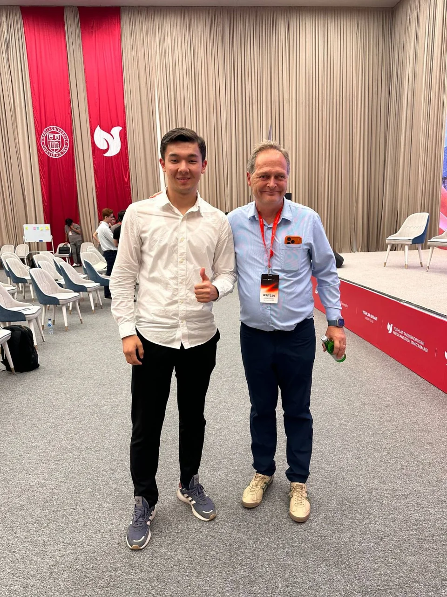

What protects small businesses when the dollar jumps?
Since I was a kid, sellers have given me the same answer whenever prices went up: the dollar went up. Now I’m testing that answer with data from six public sources and interviews with 8 business owners in Jizzakh. So far, a falling som hurts while a rising som doesn’t, and the damage shows up in sales and jobs while firms’ finances hold. Owners set prices in dollars and pass every change on to customers.